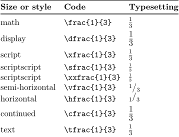
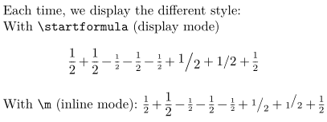
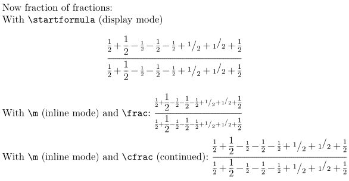
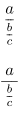
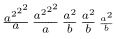
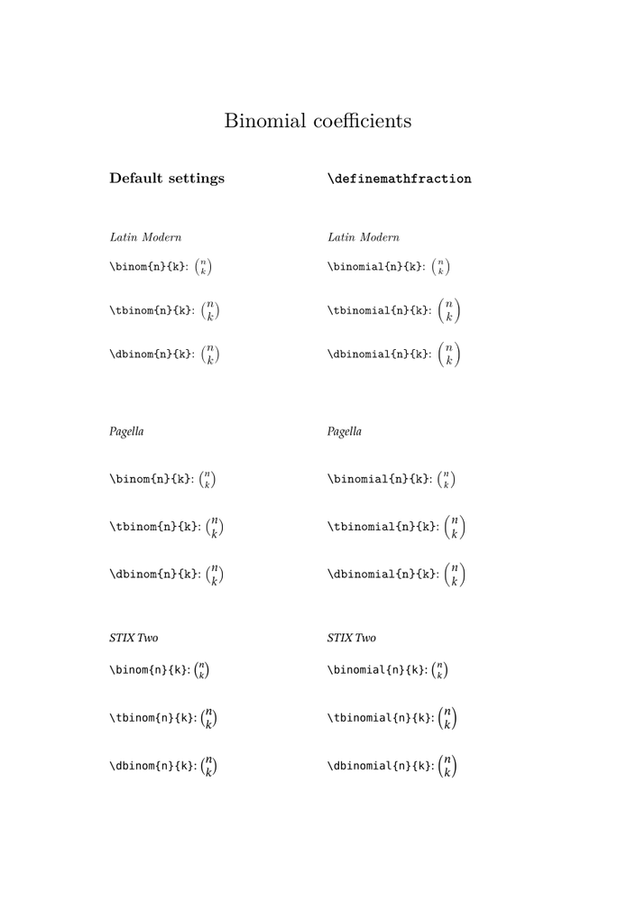

Contents
Fractions
\frac typeset fraction, according to the current style. Others commands enforce a certain style :
- \tfrac for text style
- \dfrac for display style
- \xfrac for script style.
- \sfrac and \xxfrac for script of script style.
- \cfrac for continued style
- \vfrac for semi-horizontal style
- \hfrac for horizontal style
-
\starttabulate[|l|l|l|] \HL \NC {\bf Size or style} \NC {\bf Code} \NC {\bf Typesetting} \NC\NR \HL \NC math \NC \type{\frac{1}{3}} \NC \m{\frac{1}{3}} \NC\NR \NC display \NC \type{\dfrac{1}{3}} \NC \m{\dfrac{1}{3}} \NC\NR \NC script \NC \type{\xfrac{1}{3}} \NC \m{\xfrac{1}{3}} \NC\NR \NC scriptscript \NC \type{\sfrac{1}{3}} \NC \m{\sfrac{1}{3}} \NC\NR \NC scriptscript \NC \type{\xxfrac{1}{3}} \NC \m{\xxfrac{1}{3}} \NC\NR \NC semi-horizontal \NC \type{\vfrac{1}{3}} \NC \m{\vfrac{1}{3}} \NC\NR \NC horizontal \NC \type{\hfrac{1}{3}} \NC \m{\hfrac{1}{3}} \NC\NR \NC continued \NC \type{\cfrac{1}{3}} \NC \m{\cfrac{1}{3}} \NC\NR \NC text \NC \type{\tfrac{1}{3}} \NC \m{\tfrac{1}{3}} \NC\NR \stoptabulate
- 
Different behaviors for inline and display mode
-
\startbuffer[frac] \frac{1}{2} + \dfrac{1}{2} - \sfrac{1}{2} - \xfrac{1}{2} - \xxfrac{1}{2} + \vfrac{1}{2} + \hfrac{1}{2} + \tfrac{1}{2} \stopbuffer \framed[frame=off,align=normal]{% <=== just to improve wiki rendering Each time, we display the different style: With \tex{startformula} (display mode) \startformula \getbuffer[frac] \stopformula With \tex{m} (inline mode): \m{\getbuffer[frac]}}
- 
Fractions of fractions
-
\startbuffer[frac] \frac{1}{2} + \dfrac{1}{2} - \sfrac{1}{2} - \xfrac{1}{2} - \xxfrac{1}{2} + \vfrac{1}{2} + \hfrac{1}{2} + \tfrac{1}{2} \stopbuffer \framed[frame=off,align=normal]{% <=== just to improve wiki rendering Now fraction of fractions: With \tex{startformula} (display mode) \startformula \frac {\getbuffer[frac]} {\getbuffer[frac]} \stopformula With \tex{m} (inline mode) and \tex{frac}: \m{\frac {\getbuffer[frac]} {\getbuffer[frac]}} With \tex{m} (inline mode) and \tex{cfrac} (continued): \m{\cfrac {\getbuffer[frac]} {\getbuffer[frac]}}}
- 
Formatting with \definemathfraction
Just an example from mailing list
-
\startformula \frac {a} { \frac{b}{c} } \stopformula \definemathfraction [wfrac] [margin=.25em] \startformula \wfrac {a} { \frac{b}{c} } \stopformula
- 
Just an second example from mailing list
-
\definemathfraction [myfrac] [mathstyle=script] \definemathfraction [myfracx][mathstyle=script,alternative=outer] \framed[frame=off,align=normal]{% <=== just to improve wiki rendering ${a^{2^{2^2}}\over a}$ $\frac{a^{2^{2^2}}}{a}$ $\frac{a^{2}}{b}$ $\myfrac{a^{2}}{b}$ $\myfracx{a^{2}}{b}$}
- 
Binomial coefficients
To write binomial coefficients you use any of \binom, \tbinom or \dbinom (the latter two if you want to force text style or display style respectively). These commands are defined as fractions in ConTeXt, and can be set up with \setupmathfractions.
Below we show some of the often used fonts, together with the default setting and the one just suggested. The default look of the binomial coefficients look good in several fonts, but for example not perfect in Latin Modern. You may want to play with \definemathfraction.
-
\setuphead[chapter][align=middle] \setuphead[section][style=\bfa] \setuphead[subsection][style=\it] \setuplayout[ topspace=1in, bottomspace=1in, header=0pt, footer=0pt, backspace=1in, margin=0pt, width=fit, height=fit, ] \startbuffer \type{\binom{n}{k}}: $\binom{n}{k}$\par \type{\tbinom{n}{k}}: $\tbinom{n}{k}$\par \type{\dbinom{n}{k}}: $\dbinom{n}{k}$\par \stopbuffer \starttext \title{Binomial coefficients} \startcolumns[n=2] \subject{Default settings} \subsubject{Latin Modern} \getbuffer \switchtobodyfont[pagella] \subsubject{Pagella} \getbuffer \switchtobodyfont[stixtwo] \subsubject{STIX Two} \getbuffer %\switchtobodyfont[lucidaot] %\subsubject{Lucida} %\getbuffer \column[yes] \definemathfraction[binomial] [binom] [fences=parenthesis,rule=no] \definemathfraction[tbinomial] [binomial] [mathstyle=text] \definemathfraction[dbinomial] [binomial] [mathstyle=display] \startbuffer \type{\binomial{n}{k}}: $\binomial{n}{k}$\par \type{\tbinomial{n}{k}}: $\tbinomial{n}{k}$\par \type{\dbinomial{n}{k}}: $\dbinomial{n}{k}$\par \stopbuffer \switchtobodyfont[modern] \subject{\tex{definemathfraction}} \subsubject{Latin Modern} \getbuffer \switchtobodyfont[pagella] \subsubject{Pagella} \getbuffer \switchtobodyfont[stixtwo] \subsubject{STIX Two} \getbuffer %\switchtobodyfont[lucidaot] %\subsubject{Lucida} %\getbuffer \stopcolumns \stoptext
- 
The result of the code above, with the standalone from 2017-09-05 is given below.
{kind=link}